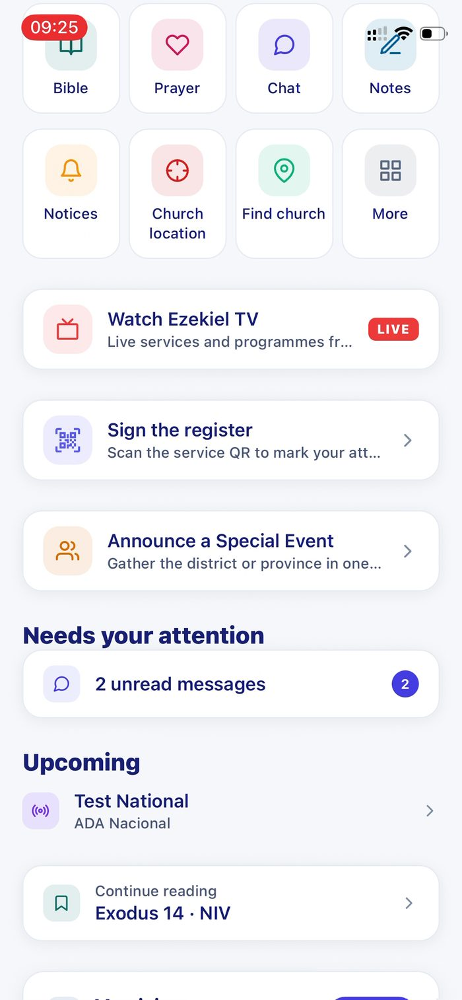
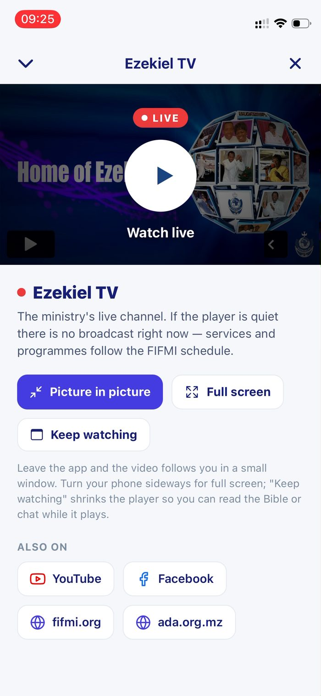
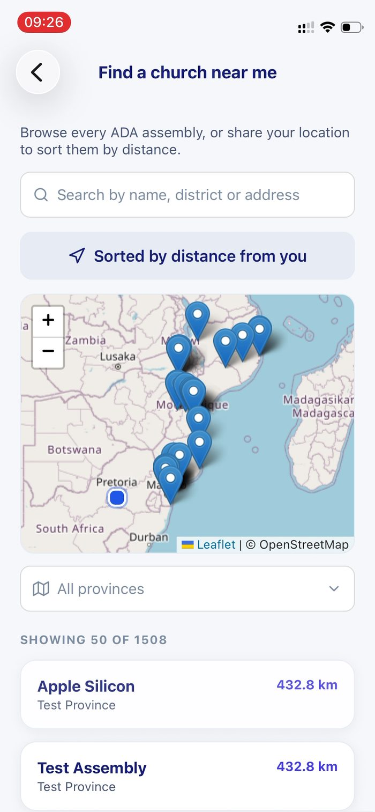
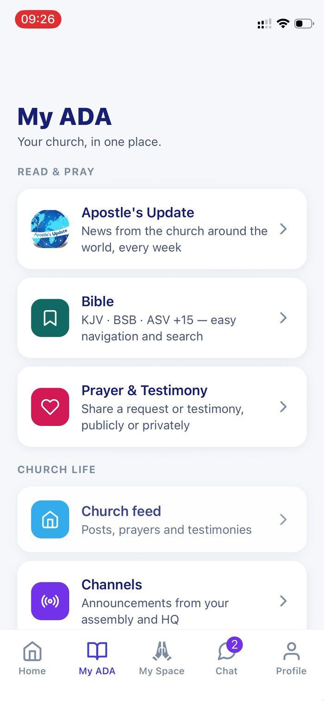
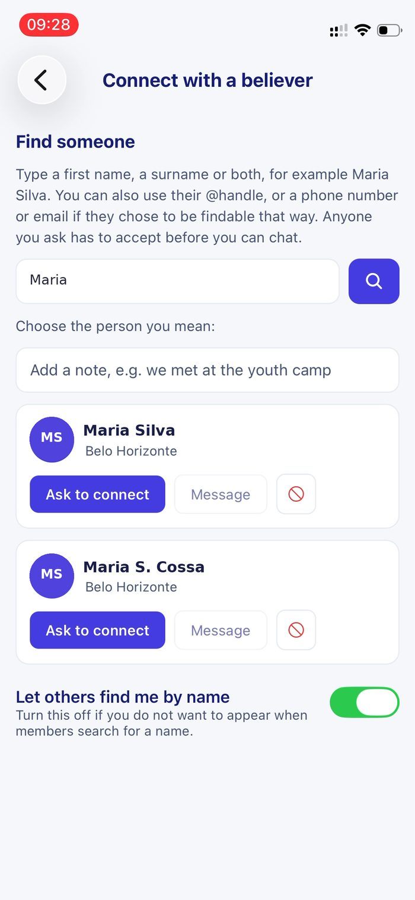
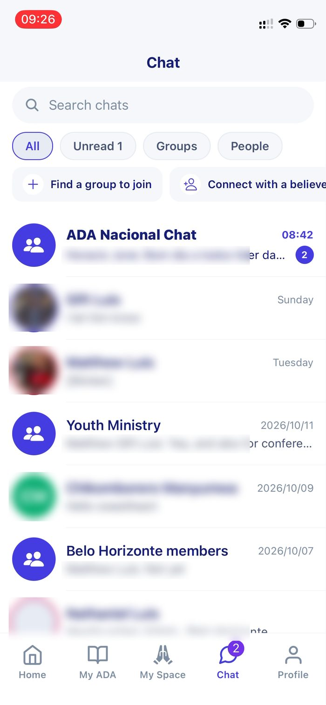
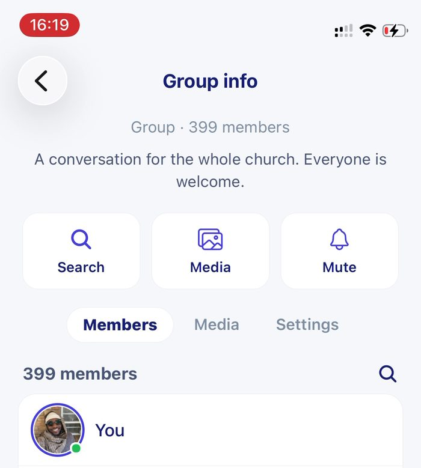
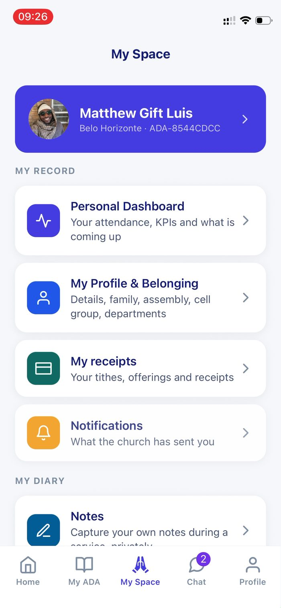
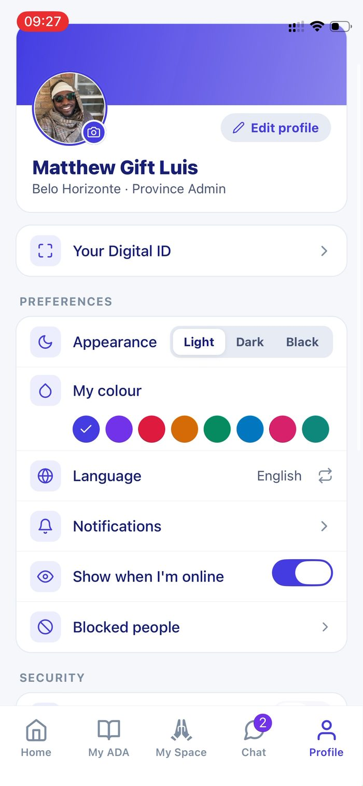
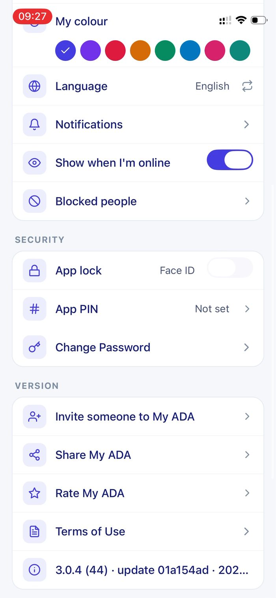

My ADA
The member app for a national church in Mozambique — a WhatsApp-grade community, the Apostle's weekly word as a channel, a Bible in local languages that works offline, giving by M-Pesa, and a toolkit for the leaders of 1,508 assemblies. On both stores, updated over the air almost daily.
Live: App Store · Google Play — version 3.0.4, Portuguese and English, following the phone's language.
The brief
The denomination already had a back office (its ERP, which I also build) and a public website. What it did not have was a way to reach its members directly: the Apostle's weekly update went out as a PDF forwarded on WhatsApp, group conversations lived in dozens of unofficial groups, and a treasurer in a district with no fibre line had no way to declare what was collected on Sunday except by phone call.
The app had to be the member's front door to the church: two taps to anything that matters, in their language, on a cheap Android phone on a slow connection — and it had to be shipped and improved continuously without waiting weeks for store review.
What I built
For members
Community that feels like WhatsApp
National, provincial, district and assembly chats plus groups and direct messages: voice notes, photos, video, documents, GIFs and stickers, quotes, forwarding, read receipts, starred and pinned messages, drafts, search, a full-screen media viewer with share and save, and group info with an A–Z member scrubber.
The Apostle's Update as a channel
Each week's word arrives as a post in a channel feed with reactions and threaded comments, pushed once to every member and mirrored on the website — imported from the ministry's source, machine-drafted into Portuguese, reviewed by the team.
A Bible that works without signal
KJV plus licensed YouVersion versions including Makhuwa-Meetto, Sena and Shona; whole-version packs downloaded on Wi-Fi and searched locally; highlights, bookmarks, verse cards, read-alongside, reading plans with streaks, and a word-of-the-day widget on the home screen.
Giving, events and church life
Give by M-Pesa or declare for the treasurer; events and Big Sundays with RSVP; attendance by QR; find the nearest church on a live map; live TV with picture-in-picture; notes with a handwriting pad; polls; church resources and publications; the ACBF business directory.
My Space and a profile that is yours
A personal dashboard, digital ID, receipts, notifications, notes, meetings and events; requests for counselling, media, transfers and access. Light, dark and black themes, your own accent colour, Face ID or PIN app lock, and a privacy switch for being found by name.
For leaders and treasurers
Contributions from the pew
Collective submissions with proof of payment, contributor statements, assembly and national dues reports, approvals inbox — the same ledger the finance team closes each month, reachable from a phone.
Putting the church on the map
Leaders capture a GPS pin and photo for their building; it waits in an approvals inbox with accuracy flags and history. Ninety per cent of the map was empty when we started.
Members, visitors, announcements
Member approvals and linking, visitor follow-up, announce a Big Sunday to a district or province, see who is coming and who cannot.
Accounts that look after themselves
Phone verification, Google and Apple sign-in, two-factor, inactivity rules with a reactivation request flow approved in either back office, account deletion that keeps pledge history.
Chat exists so the church owns its community and its data — not to out-build WhatsApp. So every feature was judged by one test: does it serve the church, and would a member in Nampula on 3G use it? Anything that failed that test (a flip-book reader, a document viewer for video) was replaced by the behaviour people already know.
Screens
Captured on a live production phone. Other members' names and photos are blurred or replaced with stand-in names; only the structure and the signed-in user remain.













Architecture
The app is a client of the church's ERP rather than a service of its own. Everything a member sees comes from the same Django back end that the finance and HR teams use — one register of people, churches and money.
My ADA React Native · Expo 57 · one JS runtime on iOS and Android
│ HTTPS (scoped tokens) │ WebSocket (chat), polling fallback
▼ ▼
Finanças ERP Django 5 · DRF · gunicorn (graceful reload) · realtime service
│ │ │ │
▼ ▼ ▼ ▼
PostgreSQL S3 media Expo Push Website (ada.org.mz)
on RDS signed URLs APNs / FCM scoped service key: updates,
comments, app health, accounts
Over the air JS changes publish in minutes to every phone (Expo Updates);
native changes batch into store releases every few weeks.
Who may do what
A member can only see their own assembly's money; a district administrator sees their district; HQ sees everything. The same permission model that governs the ERP's reports governs the app's screens, so adding a report to the ERP makes it available on the phone to exactly the same people, with no second rule book to keep in step.
The harder parts
Shipping daily to phones in people's pockets
Between 29 September and 19 October the app went from 2.4.4 to 3.0.4 — sixteen versions, the first App Store release, iPad support, and then daily over-the-air updates. The trick was putting both platforms on one runtime so a single publish reaches every phone, and keeping a strict line between what ships over the air (almost everything) and what needs a store build (native modules, widgets, sign-in providers).
Chat that behaves on a bad network
An inverted list anchored at the bottom that never jumps when the keyboard or a quote changes height; sends that retry on their own and say why they failed rather than "tap to retry"; images that show a placeholder instead of a blank bubble; a WebSocket for live updates with polling underneath for when the socket cannot connect. Each of these was a bug report from a real member before it was a feature.
Video on a phone is not a document
Videos sent as files opened in a web view that showed black for twenty seconds. The fix was a proper media viewer: only the video on screen loads, it fills the screen like a photo, tap hides the chrome, and it has its own play, scrub, mute and full-screen controls — plus a fix on the server for files stored with the wrong content type, so older uploads opened correctly too.
Not locking people out
An inactivity rule that disables dormant accounts is good security and a terrible first impression when it hits a treasurer on month-end. So the app recognises the "disabled" answer, offers a one-tap reactivation request, and the request lands in both back offices with a decision that re-enables the account and tells the member.
A Bible that respects licences and bandwidth
Local-language Bibles come from YouVersion under licence, fetched through our API so keys never reach the phone, and cached per version. Whole-version packs are gzipped with ETags so a 4 MB download on Wi-Fi gives a member their Bible for ever — searchable with accent-insensitive, whole-word matching even in airplane mode.